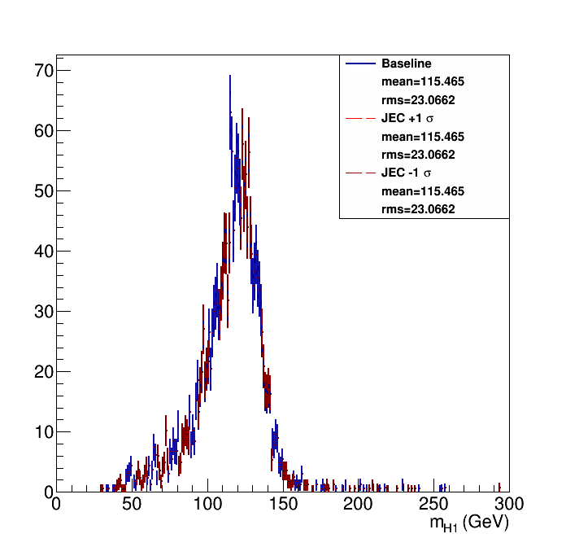
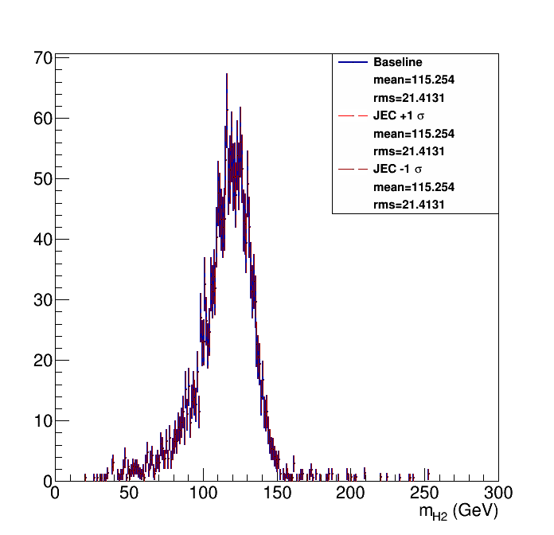
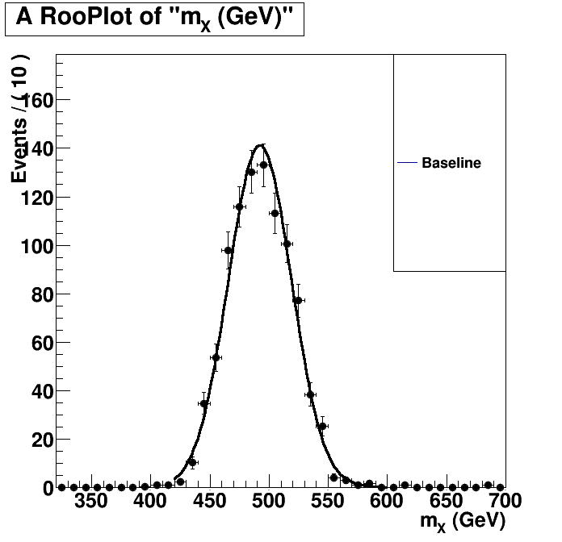
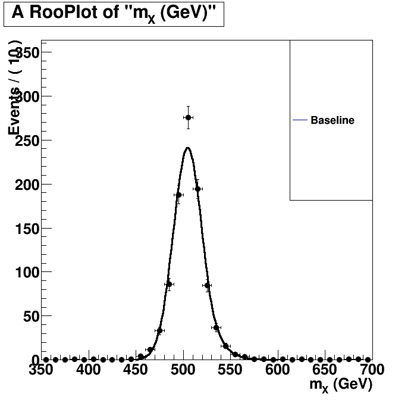

| Higgs 1 mass  | Higgs 2 mass  |
Without Kin-Fit. Fitted to an Exp-Gauss-Exp function.=== Baseline plot === |
With Kin-Fit. Fitted to an Exp-Gauss-Exp function.=== Baseline plot === norm = 456.095 sg_p0 = 504.675 0.526208 sg_p1 = 15.1888 0.400327 sg_p2 = 1.39071 0.0942604 sg_p3 = 3.6281 2.94317 btag lnN 1.08203 - |